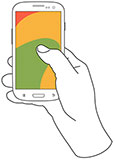

The iOS camera app is accessible from the lock screen and integrates with many third party apps, giving it huge potential to be a powerful creative tool.
Unfortunately, the app is plagued by some usability issues, and it doesn’t take advantage of many of the recent advances in iOS8 such as focus, white balance, and ISO control. I want to address these issues in this redesign.
Disclaimer
As with all unsolicited redesigns, my parameters are different than those placed on the original design team. The problem space I’m exploring is different. The user base I’m designing for is smaller. This is a thought exercise designed not to tear down what the original team created, but to build on to their solution.
The Problem Brief
In this redesign, there were 3 main problems that I wanted to address. I arrived at these issues by blending my own findings with those of a handful of active users of the default camera app to ensure I wasn’t alone in my assumptions.
All in all, the default camera app doesn’t seem to fit with the Apple ethos of providing elegant, yet powerful creative tools. On one hand it's overly simplified, but it also tries to do too many things — such as providing a separate mode just for taking square photos.
Scoping the problem
The camera app could be a huge project to tackle, since it currently incorporates everything from taking a simple photo to different modes, editing, sharing, etc. In order to more deeply explore the top three problems I uncovered in user interviews, I’ve decided to limit the scope of this redesign just to photo mode, manually adjusting settings, and faster access to video mode. While keeping landscape mode in mind, I didn't create a separate prototype for it. I also gave myself a one week timebox to force tradeoffs and make the project more realistic.
Problem 1
The camera app fails to take advantage of much of the power that newer versions of iOS provide, such as independent ISO and shutter speed controls, and the ability to manually adjust focus. This functionality could be harnessed to give users greater creative control. While there is a newly introduced manual exposure control in iOS 8, this is a blend between shutter speed and ISO.
Problem 2
There is a huge lost opportunity in that the volume controls only allow a user to snap a photo. While convenient, they could do so much more. For instance, they could allow for easy adjustment of the aforementioned features like ISO, shutter speed, and focus.
Problem 3
Switching camera modes is very difficult, requiring a side swipe in a tiny space that hides 3–4 of the available options. This results in fumbling around to switch to the appropriate mode before the moment is lost, despite that fact that a mode like “video” is more likely to be needed quickly, whereas “self timer” mode nearly always requires ample setup for the shot.
User Research
I began by picking 8 people, and asked them their favorite part about using the app, and what their top three frustrations were.
While it would seem intuitive to only ask iOS users, I did ask a couple who use Android in order to hear what they really liked about the experience. Of the iOS interviewees, most were casual users of the camera app and didn’t have strong opinions about it; two were professional designers with a strong aesthetic sense and opinions about photography; and one is a professional photographer who uses iOS devices for a good number of projects.
A universal frustration was the difficulty of switching camera modes and potentially losing moments — though this only applied to the main camera and video modes. Most interviewees were lukewarm on the app, but the 3 heaviest users sought a greater degree of control and power.
Another interesting piece of feedback was the desire to use the volume buttons for more than simply snapping a photo. Even though iOS 8 does provide manual exposure control (an automatic combination of shutter speed and ISO), it’s accessed first by tapping the screen, then sliding up or down. It’s a bit awkward.
“I am grateful for the ability to use either one of the volume buttons to take a picture within the iOS camera app. It would be great if I could do other things in the camera app with those volume buttons, too. Like, adjust exposure compensation or as a way to close-focus. Those sorts of things are tedious to do with touch gestures.”
One interviewee also mentioned the Nokia ProCam app, which has a pleasing way to manage the various camera controls on a small mobile screen.
Critiquing the Current UI
The architecture of the current UI is nonsensical. The information architecture leads to a hunt-and-peck sort of experience. Features like filters, flash, and self-timer mode get prime real estate while the user has to hunt for video mode. The context for a self timed shot, for instance, nearly always requires a carefully staged shot — whereas video mode is often required to spontaneously capture moments that could be gone in an instant.
The button to take a photo has a narrow hit area, despite the availability of space to the left and right. While I appreciate the similar visual motif through all the camera modes, I’ve missed the button on more than one occasion.
In general, since this is a thought exercise, I’ve taken creative license and removed features that I don’t think belong, such as filters. Following the concept of an app doing one thing well, I reserve post-processing for other apps such as instagram or VSCO, and let the default camera app be for quick, on-the-fly capture. I’ve also relocated certain controls, like the flash. Several interviewees mentioned they keep the flash turned off to make use of ambient lighting
However, the most grievous issue with the UI is the camera mode carousel. Panoramic, slo-mo, square and timelapse modes shouldn’t have the same prominence as photo or video modes. What’s more, navigating from one mode to another can be confusing. For instance, when the user is in timelapse mode, the only other mode visible is slo-mo. The user is left scratching her head as to where the other four modes went.
The Solution
Once I understood the problems I was solving for, I began sketching. (I always start with pen and paper, as it allows me to iterate through many ideas rapidly.) I quickly moved from sketching to using an app called POP. This allows me to take photos of drawings, and link screens together to simulate a flow. While rudimentary, it made it easy to get the “feel” for how an app might work.
At several points, I asked my user testers to play around with the prototypes I was creating. This real time feedback helped ensure I was on the right track, and that I wasn’t missing anything.
From POP, I moved into prototyping with Proto.io for a higher fidelity experience. I was very impressed with the power that Proto.io provided, which allowed for complex, chained interactions with fine-grained easing control. While it's just a prototype and doesn't demonstrate everything possible with a native app, it does come pretty close.
The first version of the prototype gave me the ability to test the size of my buttons, and to play around with how the interactions work. Like all first versions, it kind of sucked.
Prototype V1
While this first prototype didn’t attempt to model everything, I quickly ran into problems. I received positive feedback on the sliders, but realized that it was difficult to see how the values on the sliders change in real time. Also, the settings and video buttons were too crowded and hard to tap.
I reworked the prototype to solve some of these issues. I started by moving the settings bar to the left. I also attempted to deal more realistically with how a user might change settings like manual focus, flash, and HDR, and also how to hint that tapping one of the adjustments transfers control to the volume buttons on the phone hardware.
Prototype V2
UI Animation
Finally, I chose to do a quick animation of a couple interactions at the highest fidelity in After Effects to really show how the sliders interact with each other and change the image. An animation also helps to demonstrate how the movements feel. You can see the animation at the top of this page.
Conclusion
Overall I've received very positive feedback from my user testers, as this prototype has solved many of the problems they have with the default camera app.
Since I timeboxed this project to a single week, there’s a lot more that I didn't have time to tackle. In many ways this is just a first step, but going through this exercise taught me a lot. If I had allowed myself more time, I'd probably want to:
- Work through the various camera modes such as pano, time-lapse, and slo-mo.
- Broaden the scope to the entire flow of snapping a photo, editing, and posting to social media.
- Figure out how to add an easy QR code reader.
- Test with more users, and continue to iron the kinks out.